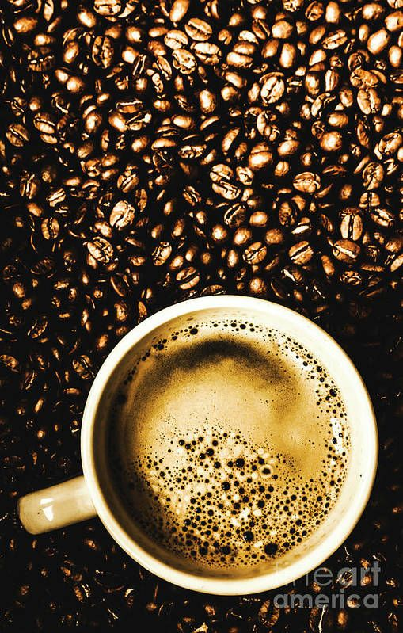
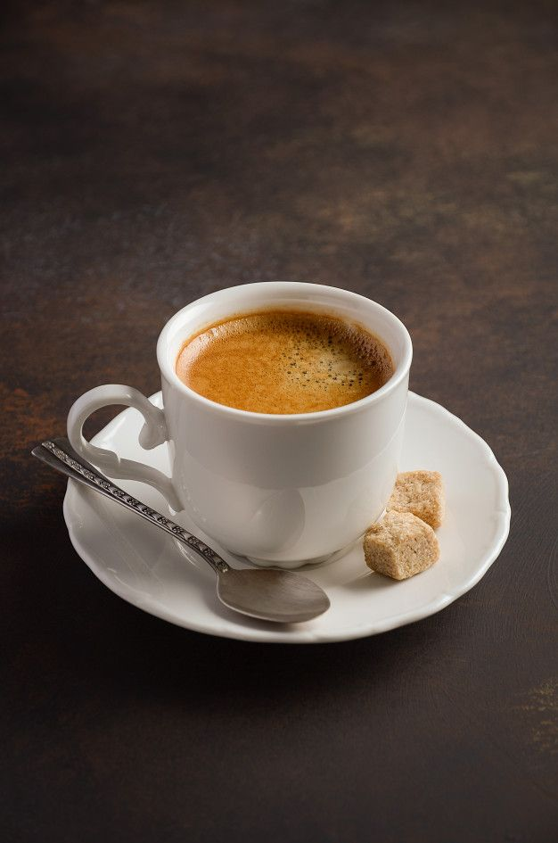
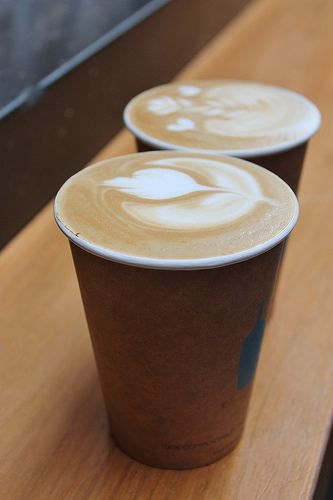
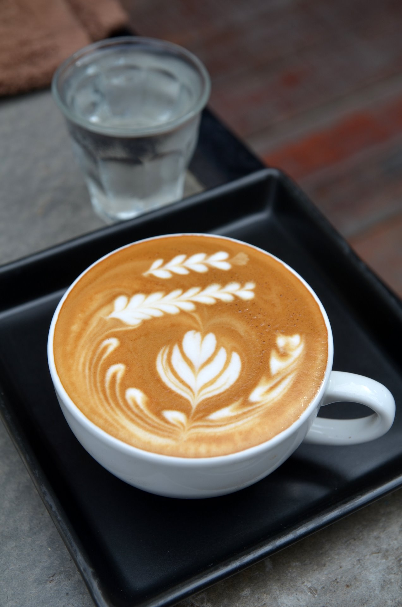

Espresso
Espresso is generally thicker than coffee brewed by other methods, with a viscosity similar to that of warm honey. This is due to the higher concentration of suspended and dissolved solids, and the cream on top (a foam with a creamy consistency). [2] As a result of the pressurized brewing process, the flavors and chemicals in a typical cup of espresso are very concentrated. Espresso has more caffeine per unit volume than most coffee beverages, but because its usual serving size is much smaller than (for example) drip-brewed coffee, the caffeine content of a single serving of espresso is generally lower than that of a mug of drip coffee.[3] The actual caffeine content of any coffee drink varies by size, bean origin, roast method and other factors, but a typical 28 grams (1 ounce) serving of espresso usually contains 64.5 milligrams of caffeine, whereas a typical serving of drip coffee usually contains 150 to 200 mg.[4][5][6]
Americano
The drink consists of a single or double shot of espresso brewed with added water. Typically in the UK (and in Italy) between 1 and 16 imperial fluid ounces or 28 and 455 ml of hot water is added to the double espresso.[10] Long Black is an Australasian term for a drink similar to the Americano (in contrast to Short Black for espresso), with an emphasis being placed on the order of preparation, adding water to the cup first before pouring the espresso on top.[11] In the western U.S., Italiano sometimes refers to a short Americano with equal amounts of espresso and water.[12] The hot water can be drawn directly from the same espresso machine that is used to brew the espresso, or from a separate water heater or kettle. Using the same heater makes a second one unnecessary, and the water can be drawn directly into the glass, either before (for a Long Black) or after (for an Americano) the espresso . Some espresso machines have a separate hot water spout for this purpose, while on others, the steam wand dispenses it. Using a separate water heater is more practical in a commercial setting, as it frees the machine for other baristas, avoids disrupting the brew water's temperature , and reduces wear on specialized equipment.
Cappuccino
In Canada, the Tim Hortons coffee chain sells iced coffee cappuccino under the brand name Iced Cps. The coffee drink mix comes to the stores as a thick black syrup which is mixed at three parts water to one part syrup in a Slurpee machine. The frozen coffee drink is then blended with cream at the time of service (or blended with milk, or chocolate milk upon customer request). The Ice Cap can also be prepared as a Supreme, which includes a flavour shot, whipped topping, and either caramel or chocolate syrup. The chain also carries iced coffee on both its Canadian and U.S. menus.
Latte
In Italy, coffee latte is almost always prepared at home, for breakfast only. This coffee beverage is brewed with a stove pot and poured into a cup containing heated milk. Unlike the "international" latte drink, generally, the milk in the Italian original is not foamed and sugar is added by the drinker, if at all. Outside Italy, typically a coffee latte is prepared in a 240 mL (8 US fl oz) glass or cup with one standard shot of espresso (either single, 30 mL or 1 US fl oz, or double, 60 mL or 2 US fl oz) and filled with steamed milk, with a layer of foamed milk approximately 12 mm (1⁄2 in) thick on the top. In the USA, a latte is often heavily sweetened with 3% sugar (or even more).[13] When wanting to order this beverage in Italy, one should ask for a latte. A cup of latte, served at Mary Beach, Australia The beverage is related to a cappuccino, the difference being that a cappuccino consists of espresso and steamed milk with a 20-millimetre-thick (0.79 in) layer of milk foam. A variant found in Australia and New Zealand that is similar to the latte is the flat white which is served in a smaller ceramic cup with warmed milk (without the layer of foam). In the United States this beverage is sometimes referred to as a wet cappuccino.